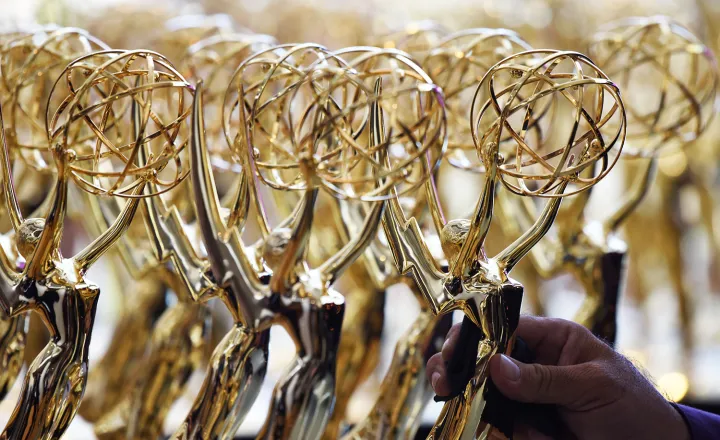

Sobre o emmy
O Emmy Award, ou simplesmente Emmy, é o maior e mais prestigioso prêmio atribuído a programas e profissionais de televisão. É apresentado em vários eventos anuais realizados ao longo do ano, cada um homenageando um dos vários setores da indústria televisiva. Os dois eventos que recebem maior cobertura dos meios de comunicação são os Emmy do Primetime e os Prêmios Emmy do Daytime que reconhecem o trabalho de destaque na programação americana do horário nobre e entretenimento diurno, respectivamente. Também existem premiações específicas, com cerimônias próprias, para programação voltada para crianças e famílias (Children's & Family Emmy Awards), esportiva (Sports Emmys), jornalismo (News and Documentary Emmys), tecnologia (Technology and Engineering Emmys), programação regional (Regional Emmys) e produção audiovisual escolar e universitária. Além disso, o International Emmy Awards são concedidos à programação de televisão produzida e, inicialmente, exibida fora dos Estados Unidos, cuja premiação geralmente ocorre no final do ano.

O nome "Emmy" foi utilizado como uma feminização de "immy", um apelido usado para tubos de imagem que eram encontrados com facilidade nas primeiras câmaras de televisão. A estatueta mostra uma mulher alada segurando um átomo. O Emmy é considerado um dos quatro maiores prêmios de entretenimento americano, sendo os outros o Grammy (música), o Oscar (cinema) e o Tony (teatro).
Existem três organizações relacionadas, mas separadas, presentes nos Prêmios Emmy: a Academia de Artes & Ciências Televisivas (ATAS), a Academia Nacional de Artes & Ciências Televisivas (NATAS) e a Academia Internacional de Artes e Ciências da Televisão (IATAS). A ATAS concedeu o Emmy pela primeira vez em 1949 para homenagear programas produzidos na área de Los Angeles antes de se tornar um evento nacional na década de 1950 para homenagear programas exibidos em todo o país. Nas duas décadas seguintes, a ATAS, a NATAS e a IATAS expandiram o prêmio para homenagear outras áreas da indústria da TV, com cada organização responsável por administrar um conjunto específico de competições do Emmy.
O primetime emmy 2023 vai acontecer no dia 15 de janeiro de 2024, devido a greve que aconteceu e fez com que a cerimônia incialmente marcada para setembro fosse adiada.